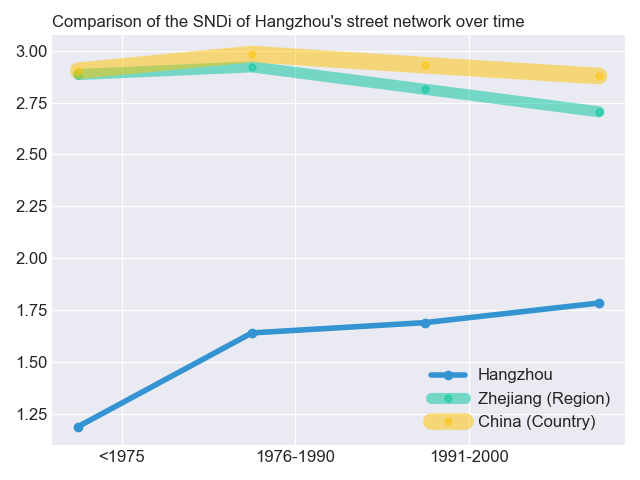
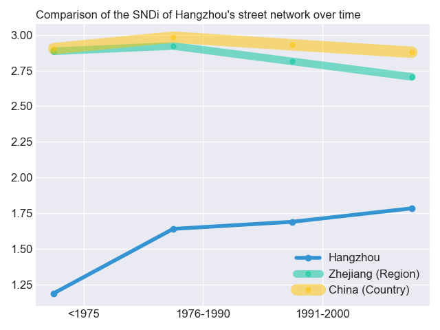

SNDi over time

Street-network Sprawl is a way to measure urban sprawl, worldwide, through the connectedness of the streets. Less sprawl means more connected, more walkable streets. Well-connected streets – like New York City’s grid – are more walkable and can be served by public transit. Our measure for street-network sprawl is the sprawl index, or the SNDi (Street Network Disconnectedness Index). A higher SNDi means less-connected streets – i.e., more sprawl. The street network is permanent, and its connectivity affects the livability and environmental footprint of cities for decades and centuries to come. In places with more connected streets, residents drive less and walk more. Sprawl is associated with worse outcomes for health, the environment, overconsumption, social segregation, and equity.
View on the sprawlmap
 

For more information about population, urban extent and density, and roads, visit the Atlas of Urban Expansion.